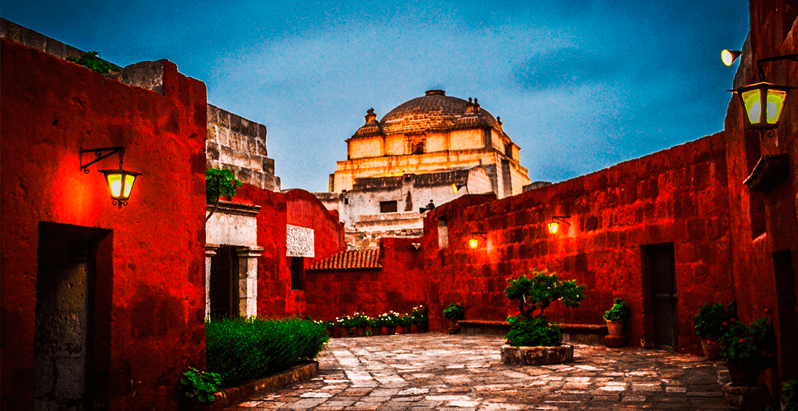

Lugares Turísticos de Arequipa
Descubre estos 6 sitios imperdibles en Arequipa
| Nombre del Lugar | Ubicación |
|---|---|
| Monasterio de Santa Catalina | Centro Histórico de Arequipa |
| Volcán Misti | Cercanías de Arequipa |
| Cañón del Colca | Provincia de Caylloma |
| La ruta del Sillar | Cerro Colorado |
| Reserva de Salinas y Aguada | Pueblo de Huito |
| Bosque de Piedras Choqolaqa | Provincia de Caylloma |
Monasterio de Santa Catalina
Un impresionante complejo religioso del siglo XVI, lleno de historia, arte y arquitectura colonial.
Volcán Misti

Un volcán emblemático ideal para trekking y vistas panorámicas desde la cima.
Cañón del Colca

Uno de los cañones más profundos del mundo, hogar del cóndor andino y andenes preincaicos.
La Ruta del Sillar

Un recorrido por canteras antiguas donde se extrae el sillar de la Ciudad Blanca.
Reserva de Salinas y Aguada
Reserva natural con flamencos, vicuñas y espectaculares paisajes altiplánicos.
Bosque de Piedra Choqolaqa
Formaciones rocosas únicas, perfectas para ecoturismo y aventuras en la naturaleza.